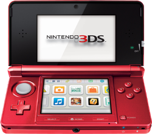

Nintendo 3ds
The Nintendo 3DS is a handheld gaming console released in 2011, known for its ability to display 3D graphics without the need for glasses. It features dual screens, with the bottom one being a touchscreen, and incorporates motion controls and augmented reality capabilities. The device boasts a robust library of games, including popular franchises like Mario, Zelda, and Pokémon. Over its lifespan, the 3DS saw several iterations, including the 3DS XL and the 2DS, catering to various player preferences. The console was praised for its innovative features and portability, solidifying its place in gaming history.